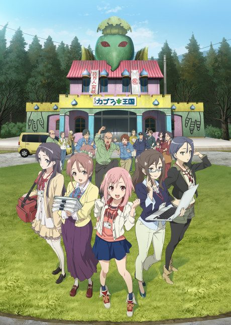

Anime2017 · Comedy, Slice of Life
Sakura Quest
サクラクエスト
AniList7.1
Animeter—
Episodes25 ep
MangaOriginal
Is it worth pushing through?
Built from what visitors report across all 25 episodes.
Loading reports…Checking what other people said about this one.
Sign in with your email at the top of the page to add your report.